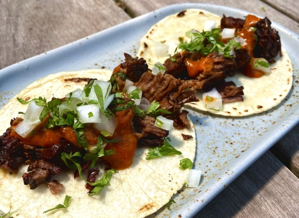

Tacos

Delicious Slow Cooked Beef Tacos
Easy to make, slow cooked brisket tacos, topped with Cilantro and Onion on a crisp corn tortilla!
Ingredients
- Corn Tortillas of choice
- 1 lb of brisket (or chuck roast)
- 1 bunch of fresh Cilantro
- 1 whole White Onion
- 1 Lime
- Step1: Cook the meat
- Step 2: Crisp the tortillas
- Step 3: Chop your veggies
- Step 4: Prepare your tacos with a squeeze of lime
- Step 5: Enjoy!